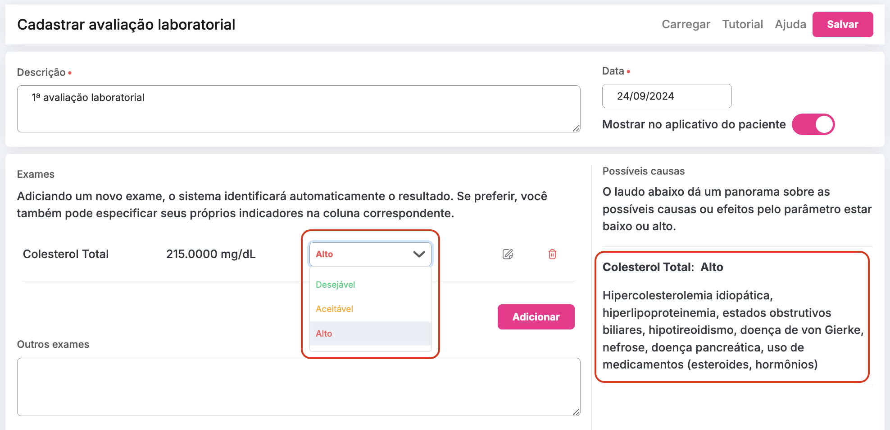
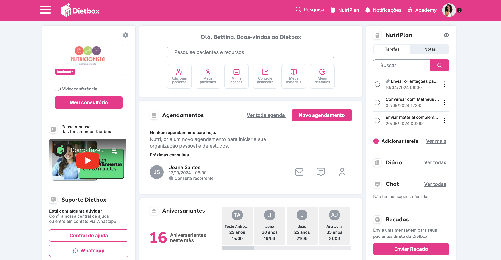
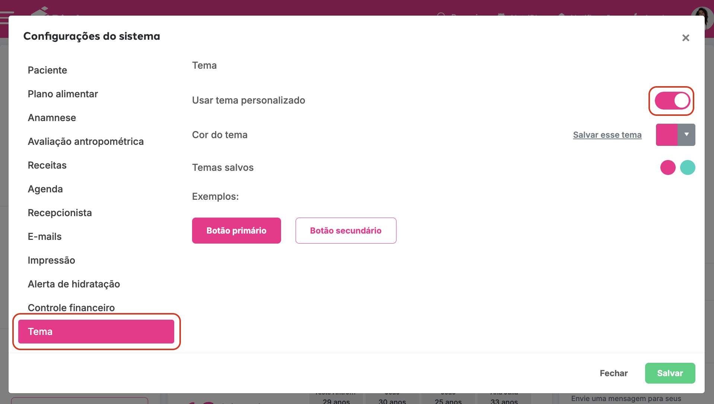
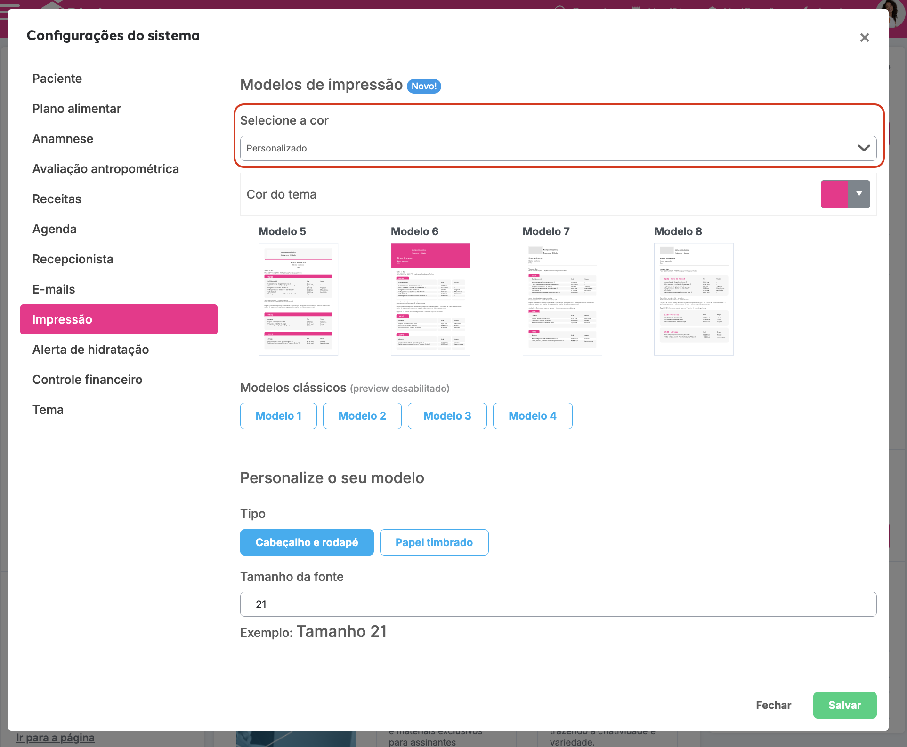
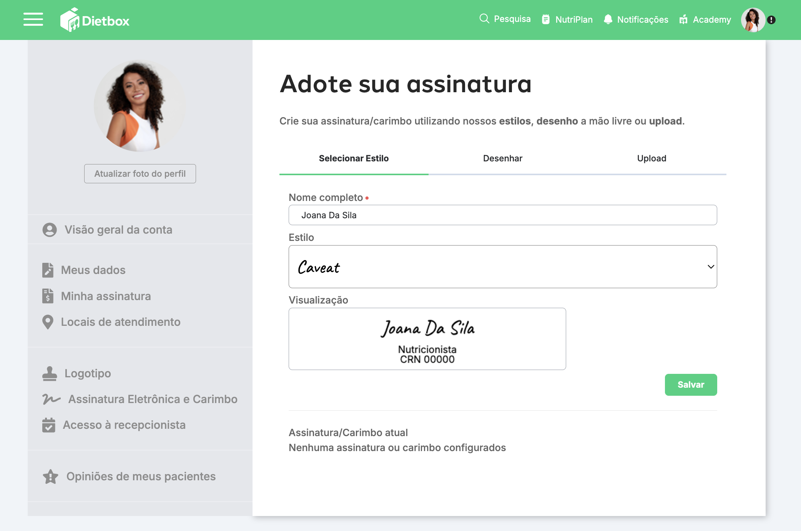
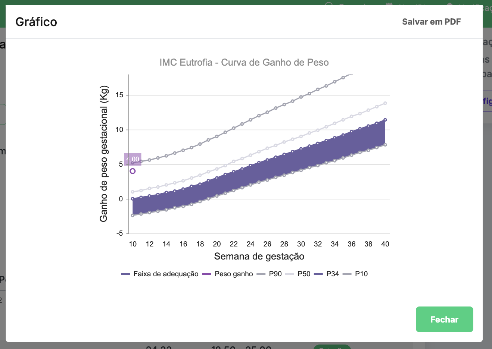
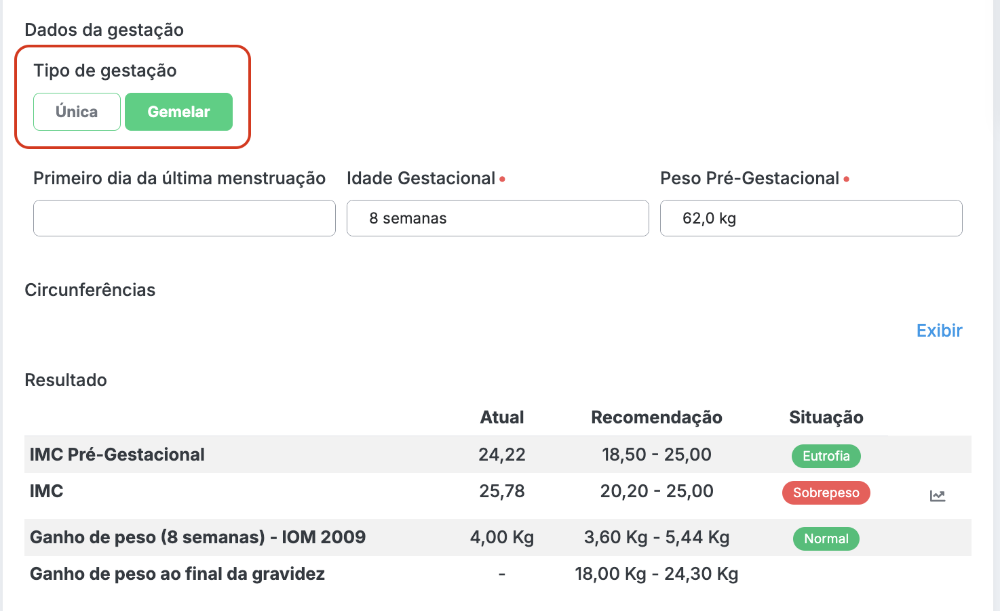
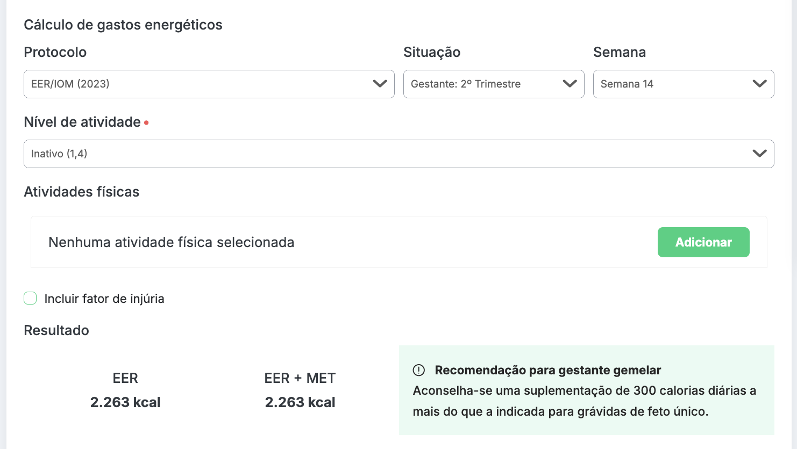

Saia na frente e fique por dentro das atualizações mais recentes!
Agora você pode alterar o resultado do exame e conforme a classificação o Dietbox apresenta as possíveis causas da alteração.
Setembro/2024
Agora você pode personalizar e deixar seu Dietbox com a sua cara. É possível escolher a cor do tema e do plano alimentar.
Para realizar a alteração é só acessar as configurações > Tema > Usar tema personalizado: SIM > Escolher a cor do seu Dietbox > Salvar
Para definir a mesma cor para os seus materiais é só continuar em configurações > Impressão > Selecione a cor: Personalizado > Salvar.
Agosto/2024
Mais segurança e modernidade para os seus atendimentos! Agora seus planos alimentares e solicitações de exames contam com a assinatura digital.
Acesse o menu à direita > Meu perfil > Assinatura eletrônica e carimbo e comece a usar agora mesmo!
Agosto/2024
Disponibilizamos o novo gráfico do Ministério da Saúde de 2022 sobre o ganho de peso da gestante.
O gráfico está disponível a partir da 10a semana gestacional:

Agosto/2024
Agora você encontra o protocolo de gestante gemelar na antropometria:
E incluímos a recomendação de adicional calórico nos gastos energéticos:
Agosto/2024